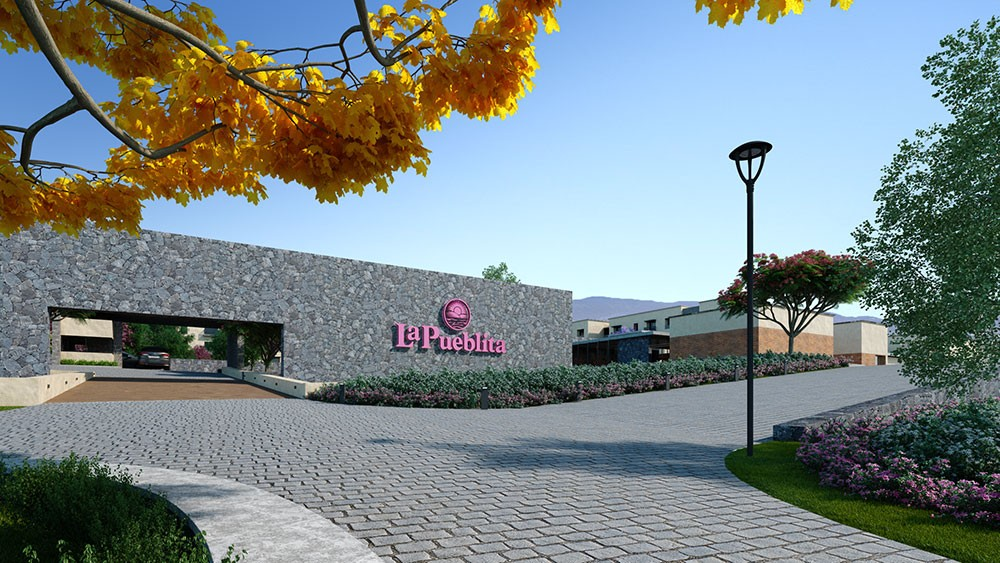
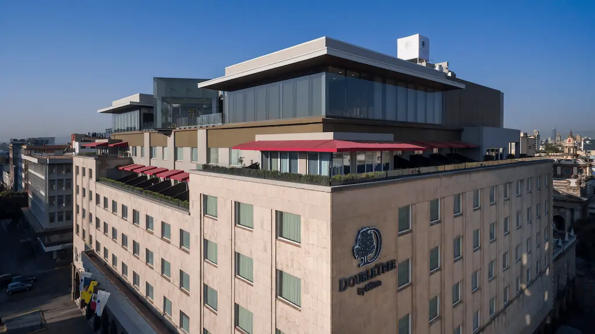
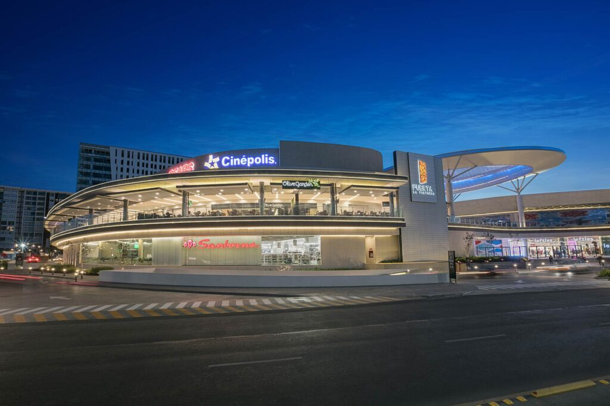
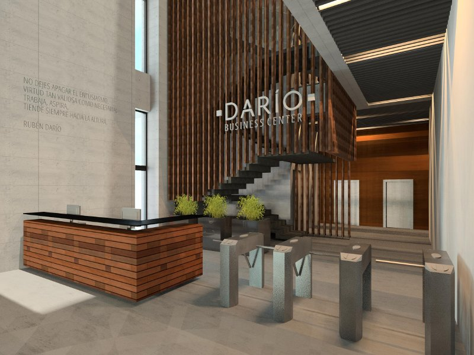

Sectores que cubrimos
Estamos especializados en cada uno de estos sectores y podemos ofrecer un servicio personalizado a nuestros clientes.
07Soluciones para Senior Living
Los desarrollos Senior Living representan una oportunidad atractiva de inversión para los desarrolladores inmobiliarios, para garantizar el éxito de estos proyectos, es imperativo llevar a cabo estudios de mercado exhaustivos, y es aquí donde la experiencia de CREA® marca la diferencia.

CREA realizo el Estudio de mercado para el desarrollo senior living de La Pueblita, ubicado en Ajijic, Jalisco.
Acerca de nuestro servicio
Los Senior Living son una oportunidad de inversión atractiva para los desarrolladores inmobiliarios. Sin embargo, es importante realizar estudios de mercado exhaustivos para garantizar el éxito del proyecto.
Ayudamos a los desarrollos Senior Living a ser más eficaces y amigables con sus estudios de mercado inmobiliario de las siguientes maneras:
- • Realizando un análisis exhaustivo del entorno: CREA® estudia el entorno del desarrollo, incluyendo la demografía, la economía, la competencia y las tendencias del mercado inmobiliario.
- • Desarrollando modelos predictivos: CREA® utiliza modelos predictivos para estimar la demanda de viviendas en el desarrollo.
Gracias a la experiencia y los conocimientos de CREA®, los desarrollos Senior Living pueden tomar decisiones más informadas sobre sus proyectos inmobiliarios.
Nuestra Contribución
CREA® realiza un análisis a profundidad sobre el mercado de adultos mayores/retirados. Este análisis incluye un examen detenido de la demografía local, las condiciones económicas circundantes, la competencia existente y las tendencias dinámicas del mercado de adultos mayores. Esta visión permite una comprensión de las oportunidades y desafíos específicos del entorno, sentando las bases para estrategias efectivas de desarrollo.
Estos modelos, basados en datos históricos y proyecciones futuras, brindan una visión precisa y anticipada de la demanda inmobiliaria específica para este segmento demográfico en crecimiento.
Nos destacamos por nuestro enfoque en el diseño y desarrollo de espacios que satisfacen las necesidades y expectativas específicas de la población senior. Este enfoque garantiza que los desarrollos Senior Living no solo sean eficaces desde el punto de vista del mercado, sino que también ofrezcan un entorno cálido, seguro y cómodo para sus residentes.
01Soluciones para Centros Comerciales
CREA® no solo le brinda información detallada sobre su entorno y competencia, sino que también le ofrece soluciones estratégicas y personalizadas para mejorar la rentabilidad y el éxito general de su centro comercial. Estamos comprometidos con su prosperidad y listos para ser su socio en el camino hacia el crecimiento sostenible.

CREA realizo el Estudio de mercado para el desarrollo inmobiliario de Encuentro Oceanía, ubicado en la delegación Venustiano Carranza de la Ciudad de México.
Acerca de nuestro servicio
CREA® es una empresa especializada en estudios de mercado inmobiliario. Nuestros servicios ayudan a los centros comerciales a comprender mejor a sus clientes, la competencia y el mercado en general. Esto les permite tomar decisiones más informadas sobre cómo atraer y retener a los clientes, y cómo optimizar sus espacios comerciales.
Algunos de los beneficios de trabajar con nosotros incluyen:
- • Un mejor conocimiento de los clientes: podemos ayudarlo a comprender las necesidades y deseos de sus clientes, para que pueda ofrecer productos y servicios que satisfagan sus necesidades.
- • Una mejor comprensión de la competencia: podemos ayudarlo a comprender las fortalezas y debilidades de sus competidores, para que pueda posicionarse de manera más efectiva.
- • Una mejor comprensión del mercado: podemos ayudarlo a comprender las tendencias del mercado, para que pueda tomar decisiones estratégicas acertadas.
Si está buscando aumentar la rentabilidad de su centro comercial, CREA® puede ayudarlo.
Disfrutará de diversos beneficios
Le asistimos en la comprensión de las necesidades y deseos de sus clientes, permitiéndole adaptar su oferta de productos y servicios para satisfacer sus demandas.
Nuestros servicios le proporcionan una visión clara de las fortalezas y debilidades de sus competidores, permitiéndole posicionar su centro comercial de manera más efectiva en el mercado.
Realizamos exhaustivos estudios de viabilidad financiera para evaluar la rentabilidad de los centros comerciales. Esto le proporciona información esencial para tomar decisiones informadas sobre inversiones y desarrollos futuros.
02Soluciones para Vivienda
En el dinámico sector inmobiliario, la toma de decisiones informadas es crucial para el éxito de los desarrolladores. En este contexto, los estudios de mercado de CREA® ofrecen una panorámica detallada de la demanda, oferta y precios de viviendas, proporcionando a los desarrolladores las herramientas necesarias para tomar decisiones estratégicas y rentables.

CREA realizo el Estudio de mercado para el desarrollo inmobiliario The Park, ubicado en San Luis Potosí.
Acerca de nuestro servicio
Nuestros estudios brindan información valiosa sobre la demanda de viviendas, la oferta de viviendas y los precios de las viviendas. Esta información puede ayudar a los desarrolladores a tomar decisiones informadas sobre dónde construir, qué tipo de viviendas construir y a qué precio venderlas.
Los estudios de mercado inmobiliario de CREA® utilizan datos de fuentes secundarias, como el censo, las encuestas y los registros públicos. También realizamos encuestas y entrevistas primarias para obtener información de primera mano de los compradores potenciales de viviendas.
Nuestros estudios son personalizados para satisfacer las necesidades específicas de cada desarrollador. Podemos proporcionar información sobre un mercado específico, un tipo de vivienda específico o un rango de precios específico.
Si está buscando aumentar la rentabilidad de su negocio inmobiliario, podemos ayudarlo. Nuestros estudios de mercado pueden brindarle la información que necesita para tomar decisiones acertadas.
La personalización es fundamental en nuestros estudios, ya que entendemos que cada desarrollador tiene necesidades y objetivos únicos.
Ofrecemos la posibilidad de focalizar el análisis en un mercado específico, un tipo de vivienda particular o un rango de precios determinado, brindando así información precisa y adaptada a cada proyecto.
Nuestros estudios se destacan por la utilización de datos provenientes de fuentes secundarias confiables, como el censo, encuestas y registros públicos. Además, llevamos a cabo encuestas y entrevistas primarias, estableciendo un contacto directo con los potenciales compradores de viviendas para obtener información valiosa de primera mano.
Nuestros estudios de mercado no solo le proporcionarán datos relevantes, sino que también le ofrecerán una visión clara y detallada del panorama inmobiliario, permitiéndole tomar decisiones acertadas que impulsen el éxito de sus proyectos. Estamos comprometidos a proporcionar la información que usted necesita para prosperar en el competitivo mercado de la vivienda.
03Soluciones para Hospitality / Hoteles / Branded Residences / Wellness
En el competitivo entorno de la industria hotelera, la rentabilidad es una métrica esencial que impulsa el éxito y la sostenibilidad de cualquier establecimiento.

CREA realizo el Estudio de mercado para el desarrollo inmobiliario de DoubleTree by Hilton ubicado en Guadalajara, Jalisco.
Acerca de nuestro servicio
Nuestros servicios pueden ayudar a la industria hotelera a mejorar su rentabilidad de las siguientes maneras:
- • Análisis de la oferta y la demanda: Recopilamos datos sobre la oferta y la demanda de hoteles en la zona del hotel. Esta información puede ayudar al dueño a determinar el precio correcto de sus habitaciones y a atraer a los huéspedes adecuados.
- • Estudio de la competencia: Analizamos a los competidores del hotel. Esta información puede ayudar al dueño a identificar oportunidades para mejorar la oferta de su hotel.
- • Estudio de las tendencias del mercado: CREA® analiza las tendencias del mercado inmobiliario. Esta información puede ayudar al dueño a prepararse para el futuro y a tomar decisiones estratégicas.
Los estudios de mercado inmobiliario de CREA® pueden proporcionar a los dueños de hoteles información valiosa que les ayude a ser más rentables.
Maximiza Ingresos y Optimiza Experiencia del Huésped.
Nuestros estudios de mercado inmobiliario van más allá de los números financieros brindando a los propietarios una hoja de ruta integral para mejorar la rentabilidad y la posición competitiva de sus hoteles. En CREA®, nos comprometemos, proporcionando información valiosa que impulsará el crecimiento y la excelencia en la industria hotelera.
Implica un análisis profundo en la ubicación específica del hotel. Esta evaluación permite no solo establecer tarifas competitivas, sino también identificar oportunidades para ofrecer paquetes y servicios personalizados que respondan directamente a las necesidades cambiantes de los clientes.
Realizamos un análisis integral de los competidores locales, evaluando no solo sus tarifas, sino también sus servicios, estrategias de marketing y feedback de los clientes. Esta visión detallada ayuda a los propietarios a identificar brechas en el mercado y a desarrollar estrategias para destacar y superar las expectativas de los huéspedes.
CREA® se sumerge en el análisis de las tendencias del mercado inmobiliario, proporcionando a los propietarios información estratégica sobre cambios en los patrones de viaje, preferencias del consumidor y tecnologías disruptivas. Esto no solo permite una preparación proactiva, sino que también facilita la adaptación a las expectativas en constante evolución de los huéspedes.
04Soluciones para Macroproyectos / Master Plan
Los macroproyectos inmobiliarios requieren una planificación precisa para el éxito. Los estudios de mercado inmobiliario de CREA® son herramientas esenciales que proporcionan a los desarrolladores información valiosa sobre demanda, oferta y prices, facilitando decisiones estratégicas y fundamentadas.
CREA realizo el Estudio de mercado para el MASTER PLAN JVC CHIVAS.
Acerca de nuestro servicio
Nuestros estudios proporcionan a los macroproyectos inmobiliarios información valiosa sobre la demanda, la oferta y los precios del mercado inmobiliario. Esta información permite a los desarrolladores tomar decisiones más informadas sobre la ubicación, el diseño y el precio de sus proyectos.
Los estudios de mercado inmobiliario de CREA® pueden ayudar a los macroproyectos inmobiliarios a ser más rentables de varias maneras:
- • Mejorando la ubicación: Nuestros estudios pueden ayudar a los desarrolladores a identificar las ubicaciones que tienen una mayor demanda y potencial de crecimiento.
- • Optimizando el diseño: Nuestros estudios pueden ayudar a los desarrolladores a diseñar proyectos que satisfagan las necesidades de los compradores potenciales.
- • Ajustando el precio: Nuestros estudios pueden ayudar a los desarrolladores a fijar precios que sean competitivos y rentables.
En resumen, CREA® puede ayudar a los macroproyectos inmobiliarios a ser más rentables, proporcionando información fundamental sobre el mercado inmobiliario. Esta información puede ayudar a los desarrolladores a tomar decisiones más informadas que les permitan maximizar sus beneficios.
Nuestros estudios desempeñan un papel crucial en los macroproyectos inmobiliarios
CREA® no solo ofrece información sobre el mercado inmobiliario, nuestro compromiso es capacitar a los desarrolladores para que tomen decisiones que no solo maximicen beneficios financieros, sino que también consoliden la posición de sus macroproyectos como referentes exitosos en el panorama inmobiliario.
Identificamos con precisión las ubicaciones con mayor demanda y potencial de crecimiento, brindando a los desarrolladores la perspectiva necesaria para elegir sitios estratégicos que maximicen la atractividad y viabilidad a largo plazo de sus proyectos.
Se proporcionan recomendaciones detalladas para el diseño de proyectos que se alineen con las necesidades y expectativas de los compradores potenciales. Este enfoque garantiza que el diseño no solo sea estéticamente atractivo, sino también funcional para el mercado objetivo.
CREA® analiza detenidamente los factores de fijación de precios, ayudando a los desarrolladores a establecer precios competitivos y rentables. Esta estrategia precisa contribuye a posicionar los macroproyectos de manera efectiva en el mercado, maximizando el retorno de inversión.
05Soluciones para Usos Mixtos
CREA® se erige como su aliado estratégico al ofrecer un estudio de usos mixtos que impulse en decisiones fundamentadas para optimizar la rentabilidad de cada proyecto.

CREA realizo el Estudio de usos mixtos para el desarrollo inmobiliario de Puerta La Victoria, un edificio de usos mixtos que cuenta con área comercial, hotel, vivienda y oficinas.
Acerca de nuestro servicio
CREA® ofrece estudios de mercado inmobiliario para desarrollos de usos mixtos que ayudan a los desarrolladores a tomar decisiones estratégicas que les permitan aumentar su rentabilidad.
Nuestros estudios se basan en un análisis exhaustivo de la demanda y la oferta del mercado, así como de las tendencias futuras. Esto nos permite identificar los usos de suelo más rentables para cada proyecto, así como la proporción ideal entre ellos.
Además, nuestros estudios incluyen recomendaciones sobre el diseño y la ubicación del desarrollo para maximizar su atractivo para los usuarios.
Con CREA®, los desarrolladores de usos mixtos pueden estar seguros de que están tomando las decisiones correctas para el éxito de su proyecto.
Disfrutará de diversos beneficios
Nuestros estudios ofrecen la capacidad de identificar usos de suelo rentables y determinar la proporción óptima para proyectos específicos. Esta perspicacia personalizada permite a los desarrolladores tomar decisiones informadas para maximizar la funcionalidad y atractivo de sus desarrollos, optimizando su rendimiento financiero.
Más allá de los aspectos cuantitativos, CREA® aporta recomendaciones valiosas sobre el diseño y la ubicación del desarrollo. Estas sugerencias están diseñadas para potenciar la atracción de usuarios al proyecto, mejorando la experiencia general y consolidando la posición del desarrollo en el mercado.
Al elegir CREA®, los desarrolladores de usos mixtos pueden confiar en decisiones estratégicas respaldadas por análisis de mercado y perspicacia estratégica. Nos comprometemos a ser su socio confiable para lograr la máxima rentabilidad y éxito en sus desarrollos.
06Soluciones para Parques Industriales
Un estudio de mercado para un parque industrial es esencial por diversas razones que afectan directamente al éxito y la sostenibilidad del proyecto.
CREA realizo el Estudio de mercado para el desarrollo del parque industrial Logistik en San Luis Potosí
Algunas de las razones
Un estudio de mercado para un parque industrial es una herramienta crucial para tomar decisiones informadas, minimizar riesgos y garantizar la viabilidad y el éxito del proyecto a lo largo del tiempo.
Ayuda a determinar la viabilidad del parque y garantiza que haya suficiente interés de las empresas para ocupar los espacios disponibles.
Una ubicación estratégica puede aumentar la atracción para las empresas y facilitar el flujo logístico.
Permite identificar oportunidades para diferenciar el parque industrial y atraer inquilinos.
Esto orienta el diseño y la planificación del parque para satisfacer las necesidades del mercado.
Evaluar la disponibilidad y calidad de la infraestructura y servicios en la zona, garantiza que el parque cumpla con los estándares requeridos por las empresas.
Identificar las tendencias actuales y futuras, como la demanda de tecnologías avanzadas, instalaciones sostenibles y requisitos específicos de la cadena de suministro.
Esto incluye zonificación, permisos de construcción y cumplimiento de normativas ambientales.
Determinar los precios de alquiler competitivos en comparación con otros parques industriales de la región. Esto influye en la atracción de empresas y en la rentabilidad del proyecto.
Un estudio de mercado sólido también es valioso para atraer inversores y financiamiento. Muestra una comprensión detallada de las oportunidades y riesgos del mercado.
La información del estudio de mercado permite planificar y diseñar de manera que sea adaptable a cambios en la demanda, tecnologías emergentes y otras dinámicas del mercado a largo plazo.
08Soluciones para Hospitales y Clínicas
Los complejos médicos son desarrollos inmobiliarios que albergan una variedad de servicios médicos, como hospitales, clínicas, laboratorios, etc. Este tipo de desarrollos tienen una gran demanda, ya que satisfacen las necesidades de una población cada vez más envejecida y con mayores necesidades de atención médica.
CREA® es aliado estratégico para los desarrolladores de espacios médicos, ofreciendo estudios de factibilidad que analizan las tendencias actuales del mercado y los cambios esperados a futuro.
Acerca de nuestro servicio
En CREA® podemos ayudar a los desarrolladores de complejos médicos a aumentar su rentabilidad con sus estudios de mercado inmobiliario de las siguientes maneras:
- • Análisis del entorno: Realizamos estudios detallados del entorno del complejo médico, incluyendo la demografía, la economía, la competencia y las tendencias del mercado inmobiliario.
- • Encuestas a potenciales usuarios: CREA® encuesta a potenciales usuarios del complejo médico para conocer sus necesidades y preferencias.
- • Desarrollo de modelos predictivos: CREA® utiliza modelos predictivos para estimar la demanda de servicios médicos en el área del complejo médico.
La experiencia y el conocimiento de CREA® en el sector inmobiliario ayudan a los desarrolladores de complejos médicos a tomar decisiones más acertadas sobre sus proyectos, lo que puede traducirse en una mayor rentabilidad.
Para aumentar la rentabilidad de los complejos médicos
Con la experiencia de CREA®, los desarrolladores de complejos médicos obtienen una ventaja estratégica al tomar decisiones acertadas en sus proyectos. Nos comprometemos como aliados, ofreciendo estudios de factibilidad inmobiliaria que superan las expectativas del sector, guiándolos hacia el éxito.
Profundizando en aspectos cruciales como la demografía local, padecimientos de salud en la región, la competencia existente y las tendencias del mercado hospitalario. Este análisis proporciona una comprensión del contexto, permitiendo que los desarrolladores tomen decisiones informadas y estratégicas en la planificación y ejecución de sus proyectos.
Nos destacamos por nuestra metodología participativa al encuestar directamente a los potenciales usuarios del complejo médico. Este enfoque nos proporciona información valiosa (necesidades y preferencias), asegurando que el complejo médico esté diseñado para satisfacer las demandas reales del mercado.
Implementamos modelos predictivos avanzados para estimar la demanda de servicios médicos en el área circundante al complejo. Ofrecen una visión integral y anticipada de la demanda, permitiendo que los desarrolladores ajusten su oferta de servicios.
09Soluciones para Educación
Las instalaciones educativas, como escuelas, universidades y centros de formación, necesitan realizar estos estudios de manera periódica para tomar decisiones informadas sobre su futuro.
CREA® se erige como un socio estratégico para las instalaciones educativas, ofreciendo estudios de mercado inmobiliario que van más allá de las expectativas convencionales.
Acerca de nuestro servicio
CREA® puede ayudar a las instalaciones educativas a ser más eficaces con sus estudios de mercado inmobiliario de las siguientes maneras:
- • Análisis exhaustivo del entorno: Estudiamos el entorno de la instalación educativa, incluyendo la demografía, la economía, la competencia y las tendencias del mercado educativo. Esta información ayuda a las instalaciones educativas a comprender las oportunidades y amenazas en su entorno.
- • Modelos predictivos: Utilizamos modelos predictivos para estimar la demanda de servicios educativos en la zona. Esta información ayuda a las instalaciones educativas a tomar decisiones informadas sobre la oferta de servicios educativos.
- • Planes financieros: Elaboramos planes financieros para garantizar la viabilidad de los proyectos educativos. Esta información ayuda a las instalaciones educativas a evitar riesgos financieros.
Esta información ayuda a las instalaciones educativas a aprovechar al máximo sus recursos.
Gracias a la experiencia y los conocimientos de CREA®, las instalaciones educativas pueden tomar decisiones más informadas sobre su futuro y garantizar su sostenibilidad.
Nuestra contribución
La experiencia de CREA® capacita a las instalaciones educativas para tomar decisiones informadas y asegurar su sostenibilidad. Nuestro compromiso es impulsar el crecimiento y la excelencia en el sector educativo mediante estudios de factibilidad inmobiliaria que superan las expectativas convencionales.
Nuestros estudios incluyen un análisis profundo del entorno que rodea a la instalación educativa. Proporcionamos información detallada que ayuda a las instituciones a comprender las oportunidades y amenazas en su entorno.
Para estimar la demanda de servicios educativos en la zona circundante. Estos modelos no solo se basan en datos históricos, sino que también incorporan proyecciones futuras, ofreciendo una visión precisa y anticipada de la demanda educativa.
CREA® elabora planes financieros detallados que garantizan la viabilidad de los proyectos educativos. Estos planes no solo identifican oportunidades de crecimiento, sino que también ayudan a evitar riesgos financieros potenciales, asegurando que las instituciones educativas puedan aprovechar al máximo sus recursos.
10Soluciones para Oficinas
En el entorno cambiante del mercado de oficinas, tomar decisiones bien fundamentadas es esencial para garantizar la viabilidad y el éxito a largo plazo de los proyectos. CREA® destaca como un aliado estratégico para los desarrolladores de oficinas al proporcionar estudios de viabilidad inmobiliaria y análisis financiero que van más allá de los estándares de mercado.

CREA realizo el Estudio de mercado para el desarrollo inmobiliario de oficinas de Dario Business Center, ubicado en Guadalajara, Jalisco
Acerca de nuestro servicio
Los estudios de factibilidad inmobiliaria, los análisis financieros y los análisis de mayor y mejor uso de suelo son esenciales para los desarrolladores de torres de oficinas y espacios de trabajo. Estos estudios permiten a los desarrolladores tomar decisiones informadas sobre la viabilidad de sus proyectos, el costo de construcción y el potencial de rentabilidad.
CREA® puede ayudar a los desarrolladores de torres de oficinas y espacios de trabajo a ser más eficaces con estos estudios de las siguientes maneras:
- • Realizando un análisis exhaustivo del entorno: Estudiamos el entorno del proyecto, incluyendo la demografía, la economía, la competencia y las tendencias del mercado inmobiliario.
- • Desarrollando modelos predictivos: Utilizamos modelos predictivos para estimar la demanda de oficinas y espacios de trabajo en el proyecto.
- • Realizando análisis de costos: CREA® realiza análisis de costos detallados para estimar el costo de construcción del proyecto.
Gracias a la experiencia y los conocimientos de CREA®, los desarrolladores Business Center y espacios de trabajo pueden tomar decisiones más informadas sobre sus proyectos y aumentar sus posibilidades de éxito.
Nuestra contribución
La experiencia y conocimientos de CREA® ayudan a los desarrolladores de oficinas para tomar decisiones acertadas, aumentando las posibilidades de éxito de sus proyectos. Nuestro compromiso es impulsar el crecimiento y la excelencia en el sector, ofreciendo análisis financieros y estudios de factibilidad inmobiliaria que sobrepasan las expectativas del mercado.
CREA® realiza un exhaustivo análisis del contexto del proyecto, que va desde la demografía local hasta las condiciones económicas de la región. Se evalúa la competencia existente y las tendencias del mercado de oficinas. Este enfoque permite a los desarrolladores de oficinas comprender las oportunidades y desafíos específicos que su proyecto podría enfrentar.
CREA® realiza análisis de costos minuciosos para estimar el costo de construcción del proyecto. Este enfoque identifica y cuantifica todos los elementos involucrados, permitiendo a los desarrolladores tomar decisiones financieras.
Utilizamos modelos predictivos avanzados que no solo se fundamentan en datos históricos, sino que también integran proyecciones futuras. Esto proporciona una visión precisa y anticipada de la demanda de oficinas y espacios de trabajo en el proyecto, siendo esencial para ajustar de manera efectiva la oferta de espacios laborales.
11Soluciones para Gobierno
Los proyectos gubernamentales, por su naturaleza compleja, demandan una planificación minuciosa y decisiones fundamentadas para asegurar su éxito. CREA® se presenta como un aliado estratégico para los gobiernos, ofreciendo una amplia gama de servicios.
Acerca de nuestro servicio
Los proyectos gubernamentales suelen ser complejos y requieren una planificación cuidadosa. CREA® puede ayudar a los gobiernos a ser más eficaces con sus proyectos de las siguientes maneras:
- • Realizando estudios de mercado: Realizamos estudios del mercado inmobiliario para identificar las oportunidades y riesgos de un proyecto.
- • Elaborando estudios de factibilidad inmobiliaria: Analizamos la viabilidad técnica, económica y legal de un proyecto.
- • Realizando análisis financieros: Estimamos los costes y beneficios de un proyecto.
- • Realizando análisis de mayor y mejor uso de suelo: Identificamos los usos de suelo más adecuados para un proyecto.
Gracias a la experiencia y los conocimientos de CREA®, los gobiernos pueden tomar decisiones más informadas sobre sus proyectos inmobiliarios.
Nuestra contribución
Estamos comprometidos a ser el socio estratégico que impulsa la excelencia en la planificación y ejecución de proyectos gubernamentales, proporcionando estudios integrales que superan las expectativas y aseguran resultados positivos a largo plazo.
CREA® realiza estudios exhaustivos del mercado inmobiliario para identificar oportunidades y mitigar riesgos asociados con un proyecto.
Analizamos la viabilidad técnica, económica y legal de los proyectos gubernamentales. Nuestros estudios van más allá de la superficie, evaluando la sostenibilidad y la coherencia del proyecto en términos de su ejecución y resultados a largo plazo.
CREA® estima de manera precisa los costes y beneficios de los proyectos gubernamentales. Nuestro análisis financiero ayuda a los gobiernos a comprender las implicaciones económicas y a tomar decisiones informadas que optimizan la relación costo-beneficio.
El estudio de mayor y mejor uso determina el uso más rentable y eficiente del suelo, considerando factores como las condiciones del mercado, la ubicación, las condiciones físicas del suelo y las regulaciones municipales.
12Soluciones para Desarrollos Orientados al Transporte
Los DOTS, caracterizados por su ubicación estratégica cerca de estaciones de transporte público, representan una innovación clave en el desarrollo inmobiliario con ventajas significativas, como mayor accesibilidad, reducción de la contaminación y ahorro de tiempo para sus residentes.
CREA realizó el Estudio de mercado para el desarrollo inmobiliario de CETRAM Martín Carrera, ubicado en la Ciudad de México.
Acerca de nuestro servicio
Los DOTS son desarrollos inmobiliarios que se ubican cerca de estaciones de transporte público. Este tipo de desarrollos tienen una serie de ventajas, como una mayor accesibilidad, una menor contaminación y un mayor ahorro de tiempo.
Ayudamos a los DOTS a ser más eficaces con sus estudios de mercado inmobiliario de las siguientes maneras:
- • Realizando un análisis exhaustivo del entorno: Estudiamos el entorno del DOT, incluyendo la demografía, la economía, la competencia y las tendencias del mercado inmobiliario.
- • Realizando encuestas a potenciales compradores: Realizamos encuestas a potenciales compradores para conocer sus necesidades y preferencias.
- • Desarrollando modelos predictivos: Utilizamos modelos predictivos para estimar la demanda de viviendas en el DOT.
Gracias a la experiencia y los conocimientos de CREA®, los DOTS pueden tomar decisiones más informadas sobre sus proyectos inmobiliarios.
Nuestra contribución
Nuestra dedicación a la excelencia en estudios de factibilidad inmobiliaria asegura que los DOTS estén equipados con la información necesaria para destacar y prosperar en el dinámico panorama del desarrollo inmobiliario sostenible.
Abarca desde la demografía local hasta la situación económica, evaluando la competencia circundante y comprendiendo las tendencias actuales del mercado inmobiliario. Este enfoque holístico permite una comprensión profunda del contexto, sentando las bases para decisiones informadas y estratégicas.
Para captar las necesidades y preferencias del mercado objetivo, llevamos a cabo encuestas detalladas a potenciales compradores. Este acercamiento directo nos proporciona información valiosa sobre las expectativas del público, permitiendo que los DOTS adapten sus ofertas inmobiliarias de manera precisa y atractiva.
Implementamos modelos predictivos avanzados para estimar la demanda de viviendas en el entorno del DOT. Estos modelos no solo se basan en datos históricos, sino que también incorporan proyecciones futuras, proporcionando una visión más completa y anticipada de la demanda inmobiliaria en la zona.